LABSIS
2025/2026
Autores:
João Pedro Ribero Bastos 1211352
1211352@isep.ipp.pt
Pedro Coelho 1200761
1200761@isep.ipp.pt
Este projeto foi desenvolvido no âmbito da unidade curricular de Laboratório de Sistemas do curso de Engenharia Eletrotécnica e de Computadores do Instituto Superior de Engenharia do Porto. O objetivo foi conceber e implementar um veículo guiado automaticamente seguidor de linha, baseado no microcontrolador ATmega88, capaz de seguir de forma autónoma uma pista preta sobre fundo branco.
De forma mais concreta, o sistema desenvolvido pretende:
Seguir a linha de forma totalmente autónoma ao longo da pista de ensaio.
Manter uma velocidade de deslocação aproximadamente constante, mesmo com variações de carga da bateria e diferenças entre os motores.
Utilizar encoders óticos nas rodas e um controlador PI para regular a velocidade de cada motor.
Ao longo do desenvolvimento foram aplicados conceitos de eletrónica digital, conversão analógico digital, controlo por PWM, temporização e utilização de interrupções, integrando num único sistema os vários temas abordados na unidade curricular.
Antes de descrever em detalhe a solução implementada é importante enquadrar o projeto no contexto do estado da arte dos veículos guiados automaticamente e dos seguidores de linha didáticos.
Estado da Arte
Nestas últimas décadas os veículos guiados automaticamente têm sido amplamente utilizados em ambientes industriais e logísticos, nomeadamente em armazéns, linhas de produção e sistemas de transporte interno. Estes veículos seguem percursos previamente definidos e são capazes de se deslocar de forma autónoma, reduzindo a necessidade de intervenção humana em tarefas repetitivas.

Figura X – Exemplo de um AGV industrial
Numa vertente mais simples existem diversos projetos didáticos de seguidores de linha que utilizam microcontroladores de baixo custo para introduzir conceitos de eletrónica digital, sensores e controlo. A maioria destes sistemas recorre a sensores óticos para distinguir o contraste entre a linha e o fundo e utiliza motores de corrente contínua comandados por um driver de potência. Em muitos exemplos o controlo é feito apenas com base na leitura dos sensores de linha sem realimentação da velocidade das rodas.

Figura X – Exemplo de seguidor de linha didático semelhante ao desenvolvido neste projeto
Em trabalhos mais avançados começa a ser comum a utilização de encoders incrementais nas rodas, o que permite estimar a velocidade angular e implementar esquemas de controlo de velocidade em malha fechada. Esta abordagem melhora a estabilidade do movimento e reduz diferenças de comportamento entre motores, especialmente em curvas apertadas ou em situações em que o atrito com o piso varia.
O projeto apresentado neste relatório enquadra-se neste contexto de seguidores de linha didáticos, incorporando no entanto algumas características típicas de sistemas mais completos. Para além do uso de um conjunto de sensores infravermelhos para deteção da fita no chão foi utilizada realimentação com encoders para controlo da velocidade de cada roda. Desta forma é possível aproximar o comportamento do veículo ao de um AGV real, explorando simultaneamente conceitos de eletrónica, aquisição de sinal e controlo em tempo real.
A arquitectura do AGV está organizada em vários blocos principais: bateria e alimentação, microcontrolador, sensores de linha, encoders das rodas e estágio de potência para os motores. A Figura X apresenta o diagrama de blocos do sistema.

Figura X – Diagrama de blocos da arquitetura do projeto
- Sensores IR: leitura analógica por ADC (5 canais) para cálculo do erro de linha.
- Encoders: contagem de impulsos por INT0 e INT1.
- Motores: comando por PWM e sinais de direção aplicados ao L293D.
- Temporização: timers para definir o período de amostragem do controlo e tarefas auxiliares de debug.
A bateria LiPo 3S fornece aproximadamente 11,6 V, tensão que alimenta diretamente o estágio de potência do sistema, nomeadamente a ponte H (L293D) para acionamento dos motores. Em paralelo, a bateria alimenta um regulador de tensão que gera 5 V para a eletrónica de controlo, incluindo o ATmega88, o módulo de sensores infravermelhos, os encoders óticos e a alimentação lógica do driver. Todos os blocos partilham uma massa comum, garantindo uma referência elétrica consistente para medições e sinais de controlo.
O controlo é organizado em duas camadas. Na camada superior, é estimada a posição da linha com base nos cinco sensores IR e calcula um erro de alinhamento relativamente ao centro do. Esse erro é convertido em duas referências de velocidade, uma para a roda esquerda e outra para a roda direita. Na camada inferior, um controlador PI de velocidade usa a realimentação dos encoders para ajustar o PWM de cada motor, de forma a que a velocidade medida siga a referência definida pela camada de seguimento de linha.
As interfaces entre blocos são implementadas com os periféricos do ATmega88: os sensores de linha são lidos por entradas ADC, os pulsos dos encoders são contados por interrupções externas (INT0 e INT1), e os motores são comandados por PWM gerado por temporizadores e aplicado ao L293D, em conjunto com sinais digitais de direção.
 Figura X – Foto do carrinho com os componentes numerados |
 Figura Y – Foto da breadboard com todas as ligações |
1-Microcontrolador
O núcleo de processamento do projeto é um ATmega88 montado na breadboard, com cristal de 16 MHz. Este microcontrolador fornece conversão analógico digital de 10 bits, módulos de PWM por hardware, temporizadores de 8 e 16 bits e duas entradas de interrupção externa, suficientes para ler os sensores, os encoders e gerar os sinais de controlo dos motores.

Figura X – Microcontrolador ATmega88 no sistema
2-Ponte H
Para efetuar o controlo dos motores foi utilizada uma ponte H do tipo L293D. Este circuito integrado funciona como etapa de potência entre o microcontrolador ATmega328P e os motores de corrente contínua, permitindo tanto o controlo do sentido de rotação como da velocidade de cada roda. As entradas de controlo do L293D estão ligadas a pinos digitais do microcontrolador, responsáveis por definir se cada motor roda para a frente ou para trás. O L293D recebe a alimentação lógica a 5 V proveniente do regulador e uma alimentação separada para potência, ligada à linha de alimentação dos motores. Desta forma o microcontrolador fica protegido das correntes mais elevadas exigidas pelos motores e é garantido que o AGV consegue arrancar e corrigir a trajetória sem sobrecarregar os pinos do ATmega88.

Figura X – Ponte H L293D
3-Motores
A tracção é assegurada por dois motores de corrente contínua com caixa de engrenagens. Os motores são comandados por um circuito integrado L293D que implementa duas pontes H. O ATmega328P gera sinais PWM no Timer0 para controlar a velocidade e usa pinos digitais para definir o sentido de rotação de cada motor. Nesta implementação o robot circula sempre para a frente, e as curvas são obtidas através da diferença de velocidade entre as rodas esquerda e direita.

Figura X – Motores
4-Alimentação
O robot é alimentado por uma bateria LiPo 3S, com tensão nominal de 11,6 V. Esta tensão é utilizada no estágio de potência dos motores, através da ponte H L293D. Para alimentar o microcontrolador e a restante eletrónica de controlo é usado um regulador de tensão linear LM7805, que reduz a tensão da bateria para 5 V. A opção por um regulador linear simplifica o circuito e facilita a integração em protótipo. No entanto, implica maior dissipação térmica quando a bateria está totalmente carregada, pelo que é importante garantir uma corrente dentro dos limites do regulador e considerar dissipação adequada durante funcionamento prolongado.

Figura X – Bateria LiPo 3S 11,6v
5-Regulador de tensão
Como já foi dito acima, para fornecer 5 V ao microcontrolador e aos periféricos foi utilizado um regulador linear LM7805. O regulador recebe a tensão da bateria LiPo 3S (tipicamente entre cerca de 11 V e 12,0 V) e disponibiliza uma saída estabilizada de 5 V para a eletrónica de controlo, incluindo o ATmega88P, o módulo de sensores de linha e os encoders.Por se tratar de um regulador linear, parte da energia é dissipada sob a forma de calor, proporcionalmente à diferença entre a tensão de entrada e os 5 V de saída, bem como à corrente consumida. Na prática, esta solução foi suficiente para o protótipo, desde que respeitados os limites de corrente e assegurada massa comum em todo o sistema.

Figura X – Regulador de tensão L7805
6-Sensores
Para detetar a fita preta no chão foi utilizado um módulo com cinco sensores óticos alinhados do tipo TCRT5000, montado na parte frontal inferior do robô. Cada sensor integra um emissor de infravermelhos e um fototransístor, permitindo distinguir entre superfícies claras e escuras através da luz refletida. As saídas dos cinco sensores são analógicas e estão ligadas às entradas ADC do ATmega328P, nas portas PC0 a PC4. Durante a fase de calibração foram medidos os níveis de tensão correspondentes à superfície branca e à fita preta, o que permitiu definir um limiar adequado no código. A partir das leituras dos cinco canais é calculada a posição relativa da linha em relação ao centro do robô, aplicando pesos diferentes a cada sensor. Este valor de desvio é depois usado pelo controlador para ajustar a velocidade de cada roda e manter o AGV alinhado com a trajetória.

Figura X – Módulo de 5 sensores TCRT5000
7-Encoders de velocidade
Cada motor está equipado com um disco fendido acoplado ao eixo, com 20 aberturas, e com um sensor ótico que funciona como encoder incremental. Sempre que uma das fendas do disco passa em frente ao sensor, é gerado um impulso digital. Os sinais dos dois encoders estão ligados às entradas de interrupção externa INT0 e INT1 do ATmega88 nas portas PD2 e PD3, respetivamente. O microcontrolador conta estes impulsos ao longo de uma janela de tempo fixa, definida por um temporizador, e a partir do número de pulsos por intervalo é calculada a velocidade angular de cada roda. Conhecendo o número de fendas por volta é possível converter o número de pulsos em rotações por segundo ou rotações por minuto. Esta medição da velocidade real é usada pelo controlador para ajustar o sinal PWM enviado à ponte H e compensar diferenças entre motores, garantindo que as duas rodas seguem a mesma velocidade desejada e permitindo um seguimento mais estável da linha.

Figura X – Encoders
LEDs
Foram utilizados dois LEDs como elementos simples de sinalização e apoio do sistema. Um LED é gerado por temporização e pisca a 1000 Hz, conforme requisito do projeto, servindo como confirmação visual de que o firmware está em execução e que a temporização está ativa. Este mesmo LED foi também útil durante testes de debug, por exemplo para validar rotinas associadas aos encoders e ao ciclo de controlo.
O segundo LED é utilizado como indicador de deteção de linha. Sempre que o sistema deteta a linha preta através do módulo de sensores IR, este LED acende, permitindo verificar rapidamente a leitura dos sensores durante a calibração e durante os testes na pista.

Figura X – LEDs
Esquema elétrico
Na figura seguinte apresenta se o esquema elétrico completo do AGV, organizado em 5 secções numeradas. Cada secção corresponde a um bloco funcional do sistema, desde a alimentação e processamento até ao controlo dos motores e aquisição dos sensores.

Figura X – Esquema elétrico
Secção 1
A secção 1 corresponde ao microcontrolador ATmega88, responsável por executar o software do AGV e tomar as decisões de controlo. É alimentado a 5 V (VCC e AVCC) a partir do regulador e possui desacoplamento local para reduzir ruído na alimentação. O oscilador externo é implementado com um cristal ligado aos pinos XTAL1 e XTAL2, com dois condensadores de 22 pF para massa, garantindo a estabilidade do clock. O pino RESET tem uma resistência de pull up para 5 V, evitando resets indesejados, e existe ainda um LED de sinalização ligado a um pino digital para diagnóstico e indicação de estado. As entradas analógicas recebem os sinais dos sensores de linha e as entradas digitais recebem os pulsos dos encoders, enquanto as saídas digitais e PWM comandam a ponte H dos motores.
Secção 2
A secção 2 corresponde à ponte H L293D, responsável por controlar os dois motores DC, permitindo definir o sentido de rotação e a velocidade. O L293D separa a alimentação da lógica da alimentação dos motores, garantindo que o microcontrolador trabalha a 5 V enquanto os motores podem ser alimentados com uma tensão superior.
- Alimentação do CI: pino 8 (VCC1) ligado a 5 V para a lógica, pino 16 (VCC2) ligado à alimentação dos motores (por exemplo 12 V)
- Massa: pinos 4, 5, 12 e 13 ligados ao GND comum do sistema
- Motor 1: ligado às saídas pino 3 (OUT1) e pino 6 (OUT2)
- Motor 2: ligado às saídas pino 11 (OUT3) e pino 14 (OUT4)
- Entradas de controlo do Motor 1: pino 2 (IN1) e pino 7 (IN2) ligados ao microcontrolador para definir o sentido
- Enable do Motor 1: pino 1 (EN1,2) ligado ao microcontrolador, normalmente a um sinal PWM para controlar a velocidade
- Entradas de controlo do Motor 2: pino 10 (IN3) e pino 15 (IN4) ligados ao microcontrolador para definir o sentido
- Enable do Motor 2: pino 9 (EN3,4) ligado ao microcontrolador, normalmente a um sinal PWM para controlar a velocidade
Em funcionamento, as entradas IN determinam o sentido de rotação de cada motor e os pinos EN recebem PWM para ajustar o duty cycle e, consequentemente, a velocidade.
Secção 3
A secção 3 corresponde ao circuito relativo ao regulador de tensão, responsável por fornecer uma tensão estável de 5 V para o microcontrolador e restantes periféricos de lógica. A alimentação principal entra a 12 V e é regulada através do LM7805, garantindo 5 V constantes na saída.
- Entrada: 12 V aplicados ao pino 1 (VI) do LM7805
- Saída: 5 V obtidos no pino 3 (VO), distribuídos para o ATmega88 e restantes módulos a 5 V
- Massa: pino 2 (GND) ligado ao GND comum do sistema
- Proteção: o díodo D1 em série na entrada evita danos caso a alimentação seja ligada com polaridade invertida
- Filtragem: os condensadores de 0,33 µF (na entrada) e 0,1 µF (na saída) estabilizam a regulação e reduzem ruído e oscilações
Este regulador alimenta a parte de controlo (lógica a 5 V). A alimentação dos motores é feita separadamente através da ponte H (VCC2 do L293D), usando a tensão mais alta disponível, enquanto a lógica do L293D e o microcontrolador permanecem a 5 V.
Secção 4
A secção 4 corresponde aos encoders das rodas, utilizados para medir a velocidade/rotação de cada motor através de sinais digitais. Cada encoder é ligado ao microcontrolador e fornece impulsos (pulsos) que permitem calcular a velocidade e servir de feedback para o controlo (PI/PID).
- Conectores: J2 (Encoder Direito) e J3 (Encoder Esquerdo)
- Alimentação: cada encoder é alimentado a 5 V e GND a partir do barramento principal
- Sinais:
- encoderD (J2) ligado ao pino PD2 do ATmega88
- encoderE (J3) ligado ao pino PD3 do ATmega88
- Função: os pulsos lidos em PD2 e PD3 permitem estimar a velocidade de cada roda e ajustar o PWM aplicado aos motores para manter a velocidade desejada
Desta forma, o sistema consegue corrigir diferenças entre motores, variações de carga e irregularidades do piso, garantindo um movimento mais estável e controlo mais preciso.
Secção 5
A secção 5 corresponde ao conjunto de sensores de linha, responsáveis por detetar a posição da linha no chão e permitir ao AGV corrigir a direção. Os sensores são lidos pelo ATmega88 através das entradas analógicas, convertendo a intensidade refletida (branco/preto) em valores digitais no ADC.
- Conector: J1 (Sensor de Linha)
- Alimentação: os sensores recebem 5 V e GND a partir do barramento principal
- Entradas analógicas usadas (ATmega328P):
- sensorL1 ligado a PC0 (ADC0)
- sensorL2 ligado a PC1 (ADC1)
- sensorL3 ligado a PC2 (ADC2)
- sensorL4 ligado a PC3 (ADC3)
- sensorL5 ligado a PC4 (ADC4)
- Função: os valores lidos no ADC permitem calcular um “erro” (desvio do centro da linha) que é depois usado no controlo (PID/PI) para ajustar o PWM dos motores
Com esta leitura em múltiplos pontos, o AGV consegue identificar se está centrado, desviado para a esquerda ou para a direita e corrigir a trajetória de forma contínua.
O software do AGV foi desenvolvido em linguagem C para o microcontrolador ATmega88 e encontra-se organizado por módulos de funcionalidade. O código está estruturado em funções dedicadas à leitura dos sensores analógicos, ao comando dos motores em PWM, à medição da velocidade com base nos encoders, bem como em várias rotinas de interrupção associadas aos timers e às entradas externas.
A lógica do software foi organizada em duas camadas, como se fossem dois níveis de decisão. A primeira camada é responsável por “seguir a linha”. Os sensores óticos lêem o chão e dizem ao robot onde está a faixa preta. Com essas leituras, o programa calcula um valor de erro que representa o quanto o robot está desviado do centro da linha e para que lado. Quanto maior esse erro, maior tem de ser a correção na direção. A partir desse erro, o robot decide novas velocidades desejadas para cada motor, de forma a voltar ao centro de forma suave.
A segunda camada é responsável por “fazer os motores obedecerem” àquilo que foi pedido. Mesmo que o programa mande um motor andar a uma certa velocidade, na prática essa velocidade pode mudar por causa da bateria, do atrito, de curvas ou de pequenas diferenças entre os dois motores. Por isso, o robot mede a velocidade real das rodas com encoders. O programa compara a velocidade real com a velocidade desejada e ajusta o PWM até a velocidade real ficar o mais perto possível da referência.
Para que estas correções não sejam bruscas nem instáveis, o robot usa controladores do tipo PID. De forma intuitiva, isto significa que o robot não reage só ao erro do momento: ele também tem em conta como o erro está a evoluir, para evitar oscilações, e ajusta gradualmente o esforço do motor para manter o movimento consistente. No seguimento de linha, isso ajuda o robot a corrigir curvas sem “abanar” ou passar para o lado errado. No controlo de velocidade, isso ajuda a manter uma velocidade estável, mesmo quando as condições mudam durante o percurso.
| Ganho | Tempo de subida | Overshoot | Tempo de estabelecimento | Erro em regime permanente | Estabilidade |
|---|---|---|---|---|---|
| ↑ Kp | Diminui | Aumenta | Aumenta pouco | Diminui | Piora |
| ↑ Ki | Diminui pouco | Aumenta | Aumenta | Diminui muito | Piora |
| ↑ Kd | Diminui pouco | Diminui | Diminui | Pouca variação | Melhora |
A tabela apresente o comportamento geral de um controlador PID completo, neste projeto o controlo foi dividido por camadas. No seguimento de linha é usado um controlador PD, para corrigir rapidamente o desvio e reduzir oscilações. No controlo de velocidade é usado um controlador PI, para compensar variações de carga e eliminar o erro em regime permanente.
Main loop
 Figura X – Trecho de código do main loop |
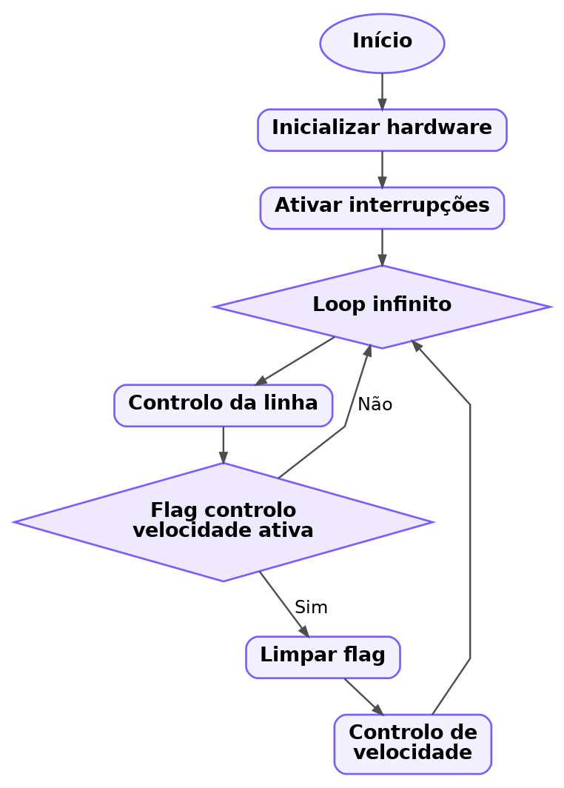 Figura X – Fluxograma do main loop |
No main loop o programa corre continuamente duas tarefas principais. Primeiro, é feito o cálculo do erro da linha e são atualizadas as referências de velocidade para cada motor, de forma a corrigir a direção do AGV. Em paralelo, o controlo de velocidade só é executado quando a flag flag_controle_vel é ativada pelo Timer2, garantindo que o ajuste do PWM é feito a intervalos regulares. Esta separação permite que o seguimento da linha seja rápido e reativo, enquanto a velocidade é estabilizada com uma cadência fixa.
Função ler_erro_linha
 Figura X – Trecho de código da funcção ler_erro_linha |
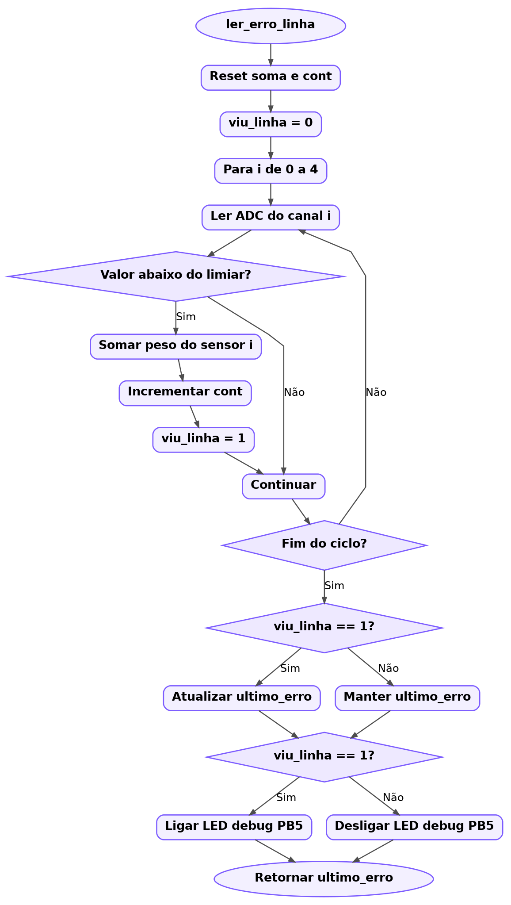 Figura X – Fluxograma da função ler_erro_linha |
O erro da linha é calculado a partir das leituras dos 5 sensores. Cada sensor que deteta preto contribui com um peso, e o programa faz uma média ponderada para obter um valor entre -4 e 4 que indica o desvio ao centro e o lado do desvio. Se nenhum sensor detetar a linha, mantém-se o ultimo_erro para orientar a procura.
Função controlo_linha
|
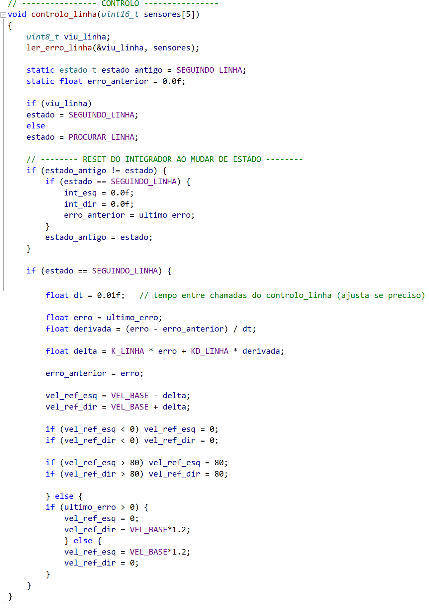 Figura X – Trecho de código da funcção controlo_linha |
 Figura X – Fluxograma da função controlo_linha |
A função controlo_linha() calcula o erro da linha a partir dos sensores e decide como ajustar as velocidades de referência dos dois motores. Se a linha é detetada, aplica um controlo PD para gerar uma correção (delta) e acelerar um motor enquanto abranda o outro, mantendo o robô centrado. Se a linha não é detetada, entra em modo de procura e roda para o lado do último erro registado até voltar a encontrar a faixa.
Função controlo_velocidade
 Figura X – Trecho de código da funcção controlo_velocidade |
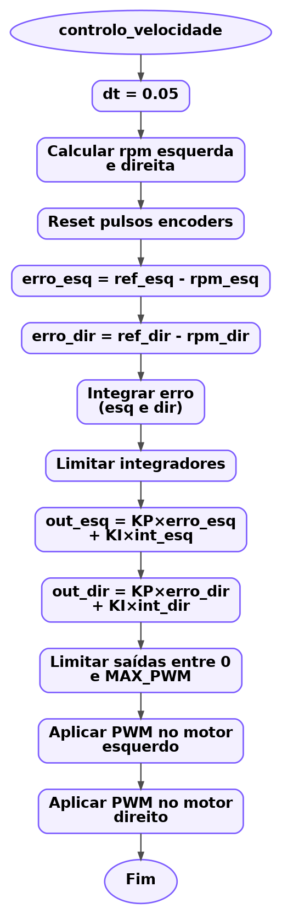 Figura X – Fluxograma da função controlo_velocidade |
A função controlo_velocidade() calcula a velocidade real de cada roda a partir dos pulsos dos encoders e converte esse valor para RPM. Em seguida, compara a velocidade medida com a referência (vel_ref_esq e vel_ref_dir) e aplica um controlo PI para determinar o PWM a enviar a cada motor. No final, o PWM é limitado ao intervalo permitido e aplicado através das funções set_motor_esq() e set_motor_dir(), garantindo uma velocidade mais estável mesmo com variações de carga ou bateria.
Função init_hardware
função init_hardware() faz a configuração inicial do microcontrolador. Define os pinos de entrada e saída, configura o Timer0 para gerar PWM para os motores, ativa as interrupções externas para leitura dos encoders, inicializa o ADC para ler os sensores de linha e configura os timers auxiliares (Timer2 para temporização do controlo e Timer1 para o LED de diagnóstico).
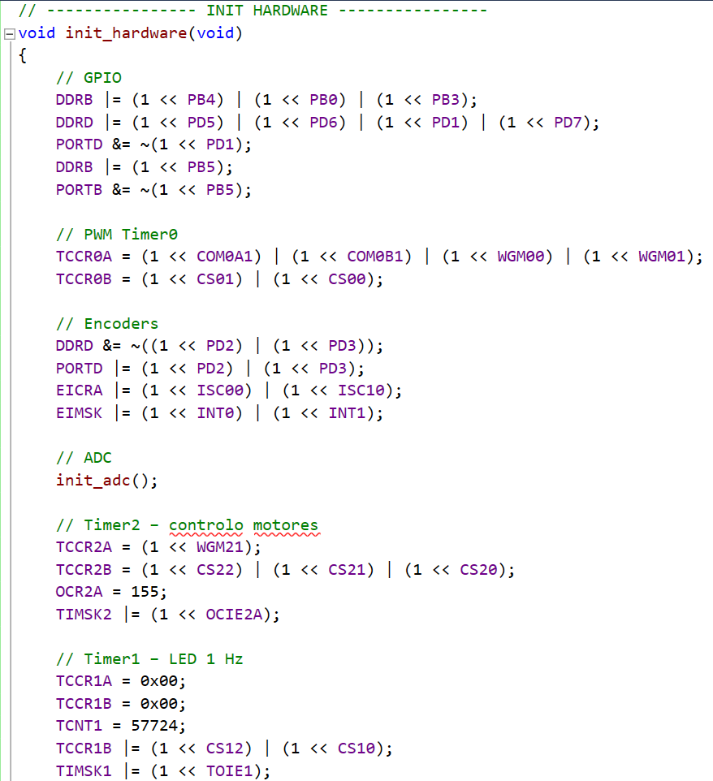
Trecho de código da função init_hardware
Interrupções Externas (INT0/INT1)
As interrupções INT0 e INT1 são usadas para contar os pulsos dos encoders das rodas esquerda e direita. Para reduzir contagens falsas causadas por ruído ou vibração, é aplicado um pequeno debounce por software, aceitando um novo pulso apenas se tiver passado um intervalo mínimo desde o último registo. Estes pulsos são acumulados e usados no cálculo da velocidade em RPM.
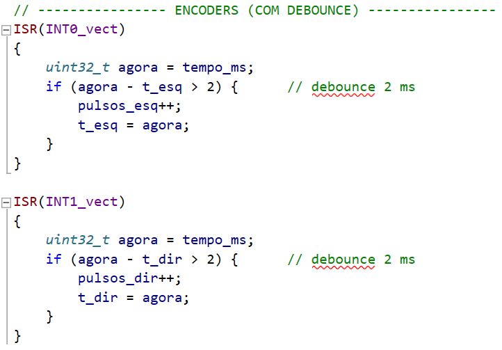
Trecho de código das funções INT0 e INT0
Configurações
Timer0
O Timer0 é utilizado para gerar PWM (Fast PWM) para os dois motores, através das saídas OC0A e OC0B, com prescaler 64.
TCCR0A

Tabela X – Registo TCCR0A
TCCR0B
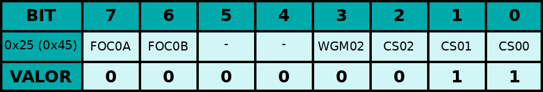
Tabela X – Registo TCCR0B
- Modo: Fast PWM (WGM02:0 = 3), TOP = 0xFF
- Saídas PWM: OC0A e OC0B em modo não inversor (duty definido por OCR0A e OCR0B)
- Prescaler: 64 (CS02:0 = 011)
- Frequência: ~ 976,6 Hz
- Interrupções: não utilizadas no Timer0 (TIMSK0 sem enables)
Timer1
O Timer1 é usado como base de tempo para fazer piscar um LED de debug em PD1. O timer está em modo Normal, com prescaler 1024, e é feito preload de TCNT1 para obter overflow a cada ~500 ms. Em cada overflow, a ISR alterna o estado do LED, resultando num piscar a ~1 Hz.
TCCR1A
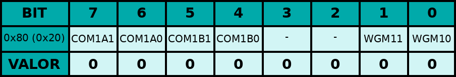
Tabela X – Registo TCCR1A
TCCR1B
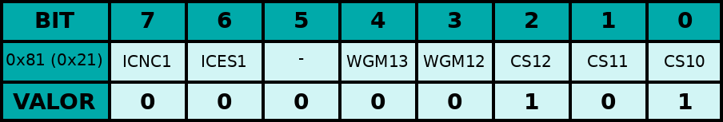
Tabela X – Registo TCCR1B
TIMSK1

Tabela X – Registo TIMSK1
- Modo: Normal (WGM13:0 = 0), TOP = 0xFFFF
- Prescaler: 1024 (CS12:0 = 101)
- Preload: TCNT1 = 57724, overflow a cada ~500 ms
- Interrupções: Overflow ativo (TOIE1 = 1)
- Função: alterna PD1 na ISR, piscar do LED a ~1 Hz
Timer2
O Timer2 é usado como base de tempo do sistema. Está configurado em modo CTC, com prescaler 1024 e OCR2A = 155, gerando uma interrupção a cada ~10 ms (usada para atualizar o tempo e lançar o controlo de velocidade).
TCCR2A
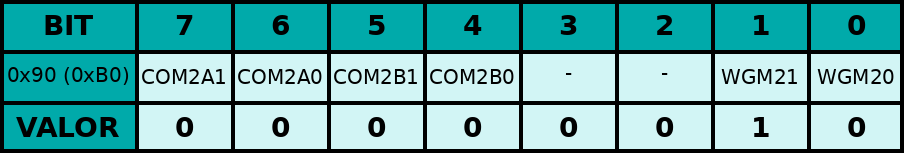
Tabela X – Registo TCCR2A
TCCR2B

Tabela X – Registo TCCR2B
TIMSK2
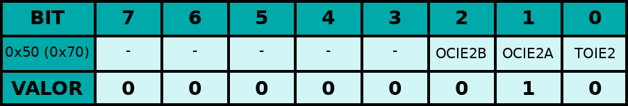
Tabela X – Registo TIMSK2
- Modo: CTC (WGM22:0 = 2), TOP = OCR2A
- Valor OCR2A: 155
- Prescaler: 1024 (CS22:0 = 111)
- Período: ~ 9,984 ms (10 ms)
- Interrupções: Compare Match A ativo (OCIE2A = 1)
INT0/INT1
ADC
O ADC é usado para ler os 5 sensores IR (canais ADC0 a ADC4). É utilizada a referência AVcc (REFS0=1) e prescaler 128, obtendo uma frequência de relógio do ADC de ~125 kHz.
ADMUX

Tabela X – Registo ADMUX
ADCSRA
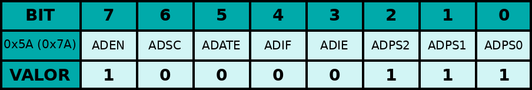
Tabela X – Registo ADCSRA
- Referência: AVcc (REFS0 = 1)
- Alinhamento: ADLAR = 0 (resultado a 10 bits)
- Prescaler: 128 (ADPS2:0 = 111)
- Frequência ADC: 16 MHz / 128 = 125 kHz
- Leitura: conversão iniciada por polling (ADSC), sem interrupções
- Canais: seleção via MUX (ADMUX), lendo ADC0…ADC4
O sistema foi testado na pista fornecida no laboratório, com uma linha preta sobre fundo branco e secções de recta e curva. Foram realizadas várias experiências com diferentes valores de velocidade de referência e de ganhos do controlador.

Tabela X – Foto do projeto final
O robot consegue seguir a linha de forma estável ao longo de voltas completas à pista, sem sair para o exterior. Observam se ainda pequenas oscilações na velocidade, sobretudo para referências muito baixas, o que está relacionado com a resolução limitada dos encoders e com a frequência de amostragem utilizada. Apesar disso, o comportamento global é adequado ao objectivo do trabalho.
A utilização dos encoders mostrou se fundamental para compensar diferenças entre motores e variações de tensão da bateria. Também revelou algumas limitações, nomeadamente a resolução relativamente baixa em RPM e a necessidade de cuidar da prioridade e da duração das rotinas de interrupção para evitar perda de pulsos.
Como trabalho futuro podem ser exploradas melhorias ao algoritmo de controlo de seguimento de linha introduzindo uma componente derivativa, filtros para reduzir ruído nas medições dos encoders e estratégias mais avançadas de procura da linha quando esta é perdida. Outra possibilidade é substituir o driver L293D por um módulo de maior eficiência, bem como desenhar uma placa dedicada para reduzir ligações em breadboard.
[1] Alcatel—SAM-O Service Aware Manager Open Interface, Release 3.0, OSS Interface Developer Guide. Alcatel, 2005.
[2] AZEVEDO, Carlos; AZEVEDO, Ana—Metodologia Científica: contributos práticos para a elaboração de trabalhos académicos. 3ª ed. Porto: Ed. C. Azevedo, 1996. pp 67-91
[3] Hofmann, Alfred; Barth, Ursula; Beyer, Ingrid; Günther, Christine; Holzwarth, Frank; Kramer, Anna; Siebert-Cole, Erika—Lecture Notes in Computer Science: Authors’ Instructions for the Preparation of Camera-Ready Contributions to LNCS/LNAI/LNBI Proceedings. Springer-Verlag, Computer Science Editorial, Tiergartenstr. 17, 69121 Heidelberg, Germany
[4] Mauro, Douglas; Schmidt, Kevin—Essential SNMP, Help for System and Network Administrators. O’Reilly, 2001. ISBN 0-596-00020-0.
[5] Net-SNMP, Version: 5.2.1, http://www.net-snmp.org/
[6] PINTO, J. A. Cardoso—RETA, Manual de Referência. PT-Comunicações, 2004.